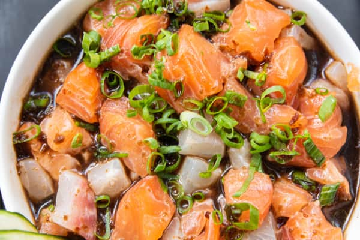
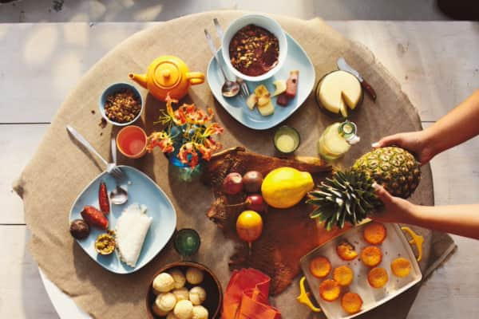
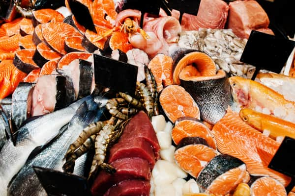
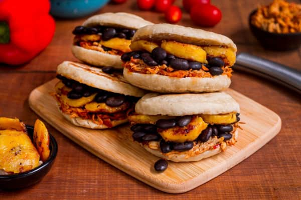
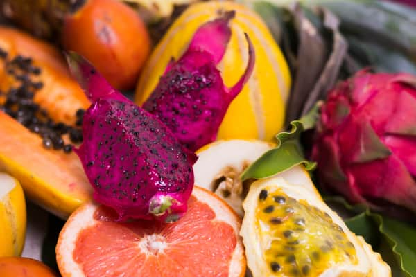

Кухня та тардиції континенту Південна
Америка
Особливості континента
Південна Америка відома своїм різноманітним та унікальним харчуванням, причому деякі страви цього материка набирають великої популярності у світовій кулінарії. Пропоную вам ознайомитись з деякими особливостями та цікавими фактами про харчування у цьому континенті.
Кухня Перу вважається однією з найрізноманітніших у Південній Америці та однією з найкращих у світі. Кулінарна спадщина Перу має вишукану та різноманітну кухню, яка поєднує індіанські, іспанські та африканські впливи. Культура харчування перуанців відома своїми стравами, такими як севиче (сира морська їжа з лимонним соком та спеціями), ломо сольядо (смажена свинина з овочами та спеціями), кей (кулінарний сир з квіноа) та антикучо (гриль з маринованим м'ясом).
Аргентина славиться своїм асадо - традиційним барбекю з яловичиною, бараниною та свининою. Ця особлива м'ясна страва готується на відкритому вогні та є однією з головних частин аргентинської культури та сімейних зборів. Також популярні емпанадас (пиріжки з начинкою), міланеза (паніроване м'ясо), мате (парагвайський чай) та дульсе-де-лече (кондитерський крем з молока). Їжа - це спосіб об'єднання родини та друзів, аргентинці цінують час за столом та гостинність.
Бразилія відома своїм багатством екзотичних фруктів, таких як асаї, маракуйя, гуава та манго. Бразильська кухня включає такі популярні страви, як фейжоада (бобова юшка з м'ясом) і пао де квеєу (сирні кульки). У Бразилії є традиція ранкового сніданку під назвою "кафе-ком-ляйт". Це багатий сніданок, який зазвичай включає свіжі фрукти, хліб, печиво, торти та соки. А на прогулянці можна знайти акараже - це популярна вулична їжа в Бразилії, особливо в штаті Баїя. Це смажені кукурудзяні шарики з креветками, подаються з гострими соусами.
Чилі є найбільшим споживачем морепродуктів у Південній Америці. Лосось, вугор, мідії, гребінці устриці та креветки – це лише деякі з найпопулярніших видів морепродуктів, які зустрічаються в чилійській кухні. Чилі славиться своїм виробництвом високоякісного вина. Виноградники в Чилі виробляють різноманітні сорти вин, включаючи каберне совіньйон, мерло та шардоне. У Чилі, крім своїх вишуканих вин, популярна страва під назвою - пастель де чокло, що являє собою запечений листковий пиріг з м'ясом, яйцями, оливками і кукурудзяною начинкою.
У Венесуелі зустрічається арепа — популярна вулична страва, яка є плоским кукурудзяним хлібцем, обсмаженим і наповненим різними начинками, такими як м'ясо, сир або квасоля. Венесуела виробляє та споживає більше бананів, ніж будь-яка інша країна у Південній Америці. Банани часто використовуються у різних стравах, включаючи банановий хліб та десерти. "Пабеллон кріолло" - це традиційна національна страва Венесуели. Вона складається з бавовнистого рису, чорних квасолів, смаженої говядини або свинини та плантана.
Амазонський дощовий ліс пропонує різноманітність екзотичних продуктів: асаї, драконфрукт, гуава, маракуйя, гуанабана та мангостин. Ці фрукти мають унікальні смаки та поживні властивості, використовуються в багатьох стравах та напоях. Амазонський ліс - одне з головних місць, де вирощуються бразильські горіхи, є багатим джерелом здорових жирів та білків. Амазонка відома вирощуванням якісного какао, з цього регіону походить багато видів какао-бобів. Амазонка відома своїми "суперфудами", такими як асаї, мака, чіа. Які мають високу поживну цінність і є джерелом вітамінів та антиоксидантів.
